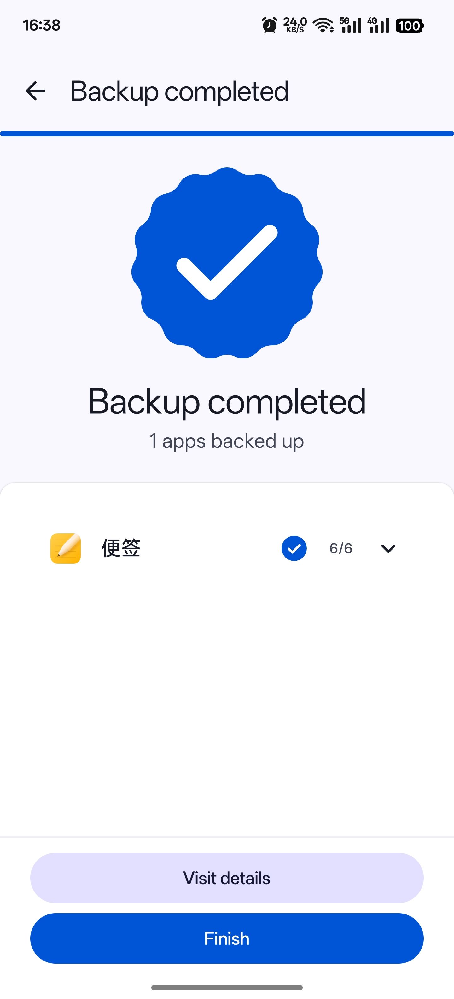
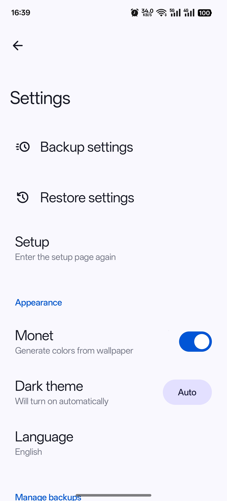

把 DataBackup 嵌进我的刷机与换机工作流
从旧 ROM 到新设备，从主空间到分身空间，DataBackup 不只是备份工具——它是我整条 Android 折腾链的连接器。
旧流程：刷机像搬家，每次都在赌运气
我是那种每年至少刷两次 ROM 的人。以前每次刷机前的准备工作是这样的：
先花半小时在旧设备上跑一遍系统自带的备份（Google One 同步应用数据 + 手动导出微信聊天记录到电脑 + 备忘录复制到云盘），然后刷完 ROM，新设备启动后得一个个装应用、一个个手动导回数据。微信还好有自己的迁移功能，但其他几十上百个应用呢？有的根本不支持云备份，有的备份了恢复回来设置全丢，游戏存档得等十几分钟的云同步。
最头疼的是多用户场景。我主空间装的是日常用的微信和支付宝，分身空间是工作号和测试用的 App。系统自带备份只会备份当前登录的那个用户的数据——我得先切到分身、跑一遍备份、导出、再切回主空间、再跑一遍，两套备份文件分开存，恢复时还得记清楚哪份对应哪个用户。
跑下来一套流程至少两三个小时，还经常在某个环节卡壳：签名冲突导致恢复失败、备份文件损坏、应用商店里找不到某个冷门 App……每次刷机前都像在赌运气。
新流程：DataBackup 当整条链的枢纽
我把 DataBackup 插进这条折腾链之后，整个流程的骨架变成了：
刷机前 → 跑一轮全量备份 → 自动打包成时间戳命名的目录 → 拷一份到 NAS → 刷机 → 从商店批量装应用 → 打开 DataBackup 点恢复
看起来好像只是把系统自带备份换成了 DataBackup，但变化是结构性的——以前那些分散在各个环节的手动操作，现在集中在两个点上完成：备份一次、恢复一次。中间的应用安装环节我用 Play 商店的「批量安装」搞定，跟 DataBackup 完全解耦；DataBackup 自己则从官方下载拿安装包，不走商店渠道。
工作流里 DataBackup 接在哪一环
整个流程的衔接点很清晰：
- 备份端：从DataBackup官网下载装好后，直接读
/data/data/下的原始数据，不依赖各应用自己的云备份功能。不管应用本身支不支持备份，DataBackup 都能拿到完整数据。备份产物按应用分目录、按 zstd 压缩，跑完后整个备份目录就是一个可以随手拷走的文件夹。 - 存储端：备份目录跑完后，我用一个简单的脚本（
adb pull整个备份目录）拉到电脑，再用 Rclone 同步到 NAS。zstd 压缩率比 gzip 好 10~20%，拉取和同步都省时间省带宽；压缩参数和存储路径的高级配置，我去DataBackup文档翻了一下才完全搞清楚。 - 恢复端：刷完 ROM 后，我先用应用商店把常用应用批量装一遍（用"仅恢复数据"模式），DataBackup 只负责把数据解压进去，不碰 APK。这样避开了最常见的签名冲突坑——ROM 自带商店装的版本和备份里的 APK 签名可能不一样，用前者装完再恢复数据就没这个问题。
- 多用户端：备份和恢复时顶部有用户切换按钮，在主空间就能看到并备份分身空间的所有应用，切换一下就能把主用户、分身用户各自的数据分开存档。恢复时也可以选把哪份备份恢复到哪个用户，甚至支持跨用户还原——我试过把工作号的某个 App 数据临时恢复到主空间来查一个文件，完了再切回去，全程不用切换系统用户。
实操里最容易断链的两个环节
环节一：备份中途被打断
有次刷机前手机只剩 10% 电，备份跑到一半自动关机。重新开机跑恢复时 DataBackup 跳过了几个失败的应用，但那次不完整的备份子目录一直躺在那里占空间，下次恢复时我差点选错了那份。
现在我的做法是：备份完成后先在 DataBackup 的核对界面扫一眼有没有失败项，任何失败项都直接删掉那次备份子目录、重新跑一遍。有失败项的备份宁可不用，恢复时在一堆时间戳目录里找对的那份本来就费劲，混入一份损坏的只会更乱。
环节二：换机时的跨设备恢复
换机场景和刷机不同——旧设备的 APK 和数据是一套的，签名版本完全匹配，所以我用的是「完整恢复」模式，DataBackup 会先装 APK 再解压数据，一步到位。但新设备上如果某些应用从商店装不到（比如一些小众的 Android Auto 应用），旧备份里刚好有 APK，这时候完整恢复就特别有用。
跨设备恢复前的关键动作是：先确认备份目录在新设备上能读到。我习惯把备份目录放在手机内部存储的根目录下，新设备插上数据线就能识别到。如果备份存在旧设备的 SD 卡或 NAS 里，得先拷到新设备本地再开 DataBackup，否则它找不到备份源。
备份目录的命名和管理
DataBackup 默认用时间戳命名备份子目录（2026-10-15-14-30-00），排序方便但看不出那次备份是干什么的。我现在每次备份前都自定义名称：「刷机前-2026-10-15」「换机前-旧设备-2026-10-12」「日常备份-2026-10-01」，恢复时一眼就能找到对应用途的那份。
保留几份的原则是：日常备份留最近 2~3 份；刷机前的那份保留到新系统跑稳了再删；关键节点（比如大版本升级前）的备份单独拷到 NAS 长期存档。已经在电脑或云端另存过的本地备份可以删，双份保险够了。


效果：两三个小时变二十分钟
整套流程跑通之后，时间成本的变化是这样的：
- 备份端：以前分散在各个应用里手动导出，现在 DataBackup 一次性跑完，全程不用盯着，5~10 分钟搞定
- 存储端：zstd 压缩后的备份目录比以前各自导出的散文件小了接近一半，拉取和同步 NAS 少了一半时间
- 恢复端：以前先手动装几十个应用再逐个导数据，现在应用商店批量装完，DataBackup 点一下自动解压所有数据，二十分钟内整个流程走完
最实在的变化不是省了多少时间，而是整个流程的确定性——以前每次刷机都在赌某个 App 的备份会不会损坏、签名会不会冲突、数据能不能完整恢复；现在 DataBackup 把这些不确定性都收拢成了两个操作：备份和恢复，中间的环节要么自动化、要么解耦。
什么时候这套流程不划算
DataBackup 依赖 Root 权限，没有 Root 的设备用不了。另外它不处理照片、音乐这些媒体文件——那些我用相册自带的云备份和 Rclone 同步，不在这条链里。还有一种情况：如果你只打算备份一两个核心 App，DataBackup 的重量级工具链就显得冗余了，单独用应用自己的备份功能反而更快。但像我这种每次要处理几十个 App、还得分身两套数据的场景，DataBackup 是唯一能把整个折腾流程串起来的工具。
这套工作流我已经跑了大半年，刷过三次 ROM、换过一次设备，每次恢复都一次过。DataBackup 不是备份市场里功能最全的工具，但它是我见过最像"连接器"的那个——把 Android 折腾这条链上的各个环节真正粘合成了一套能跑的流程。整理这套工作流的相关资料时，我顺手在GitHub放了主仓库，国内访问的朋友可以走Gitee或GitCode镜像。